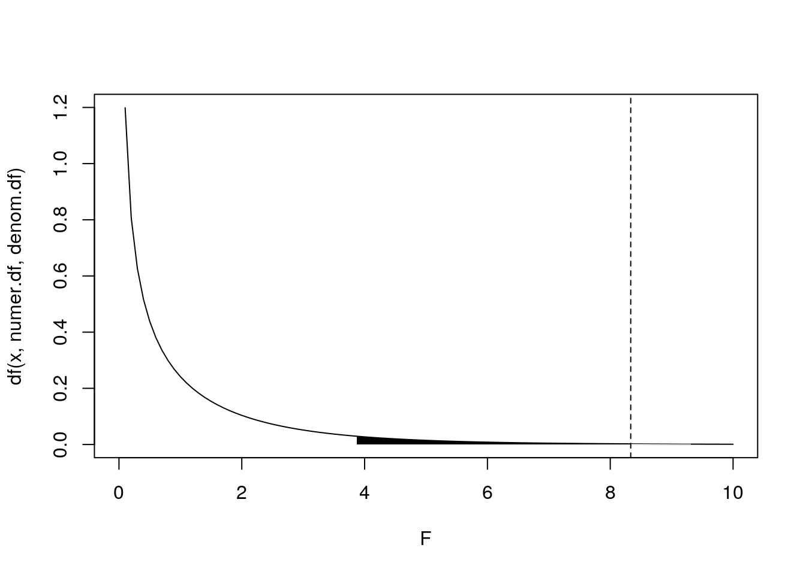
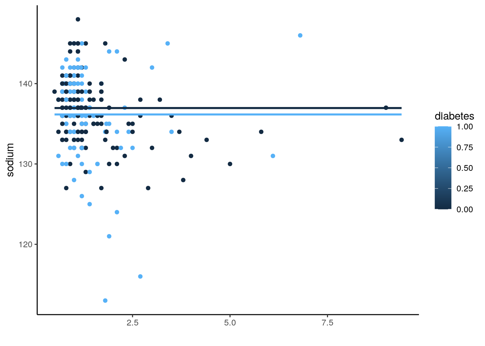
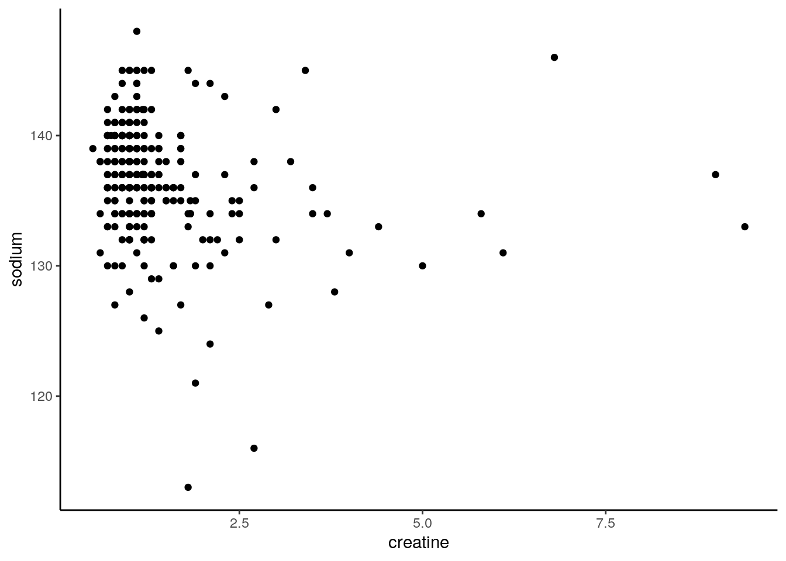
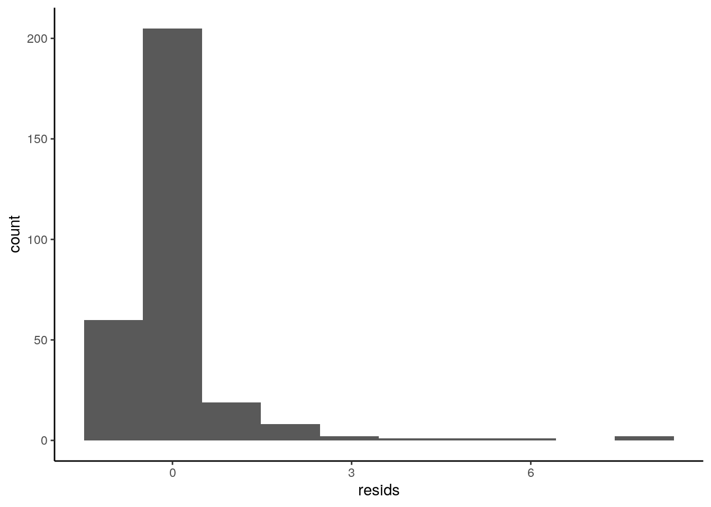
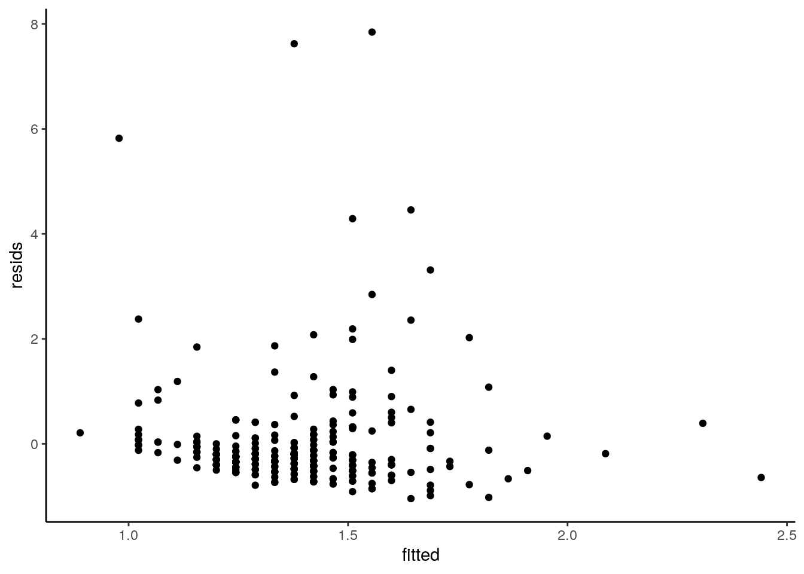
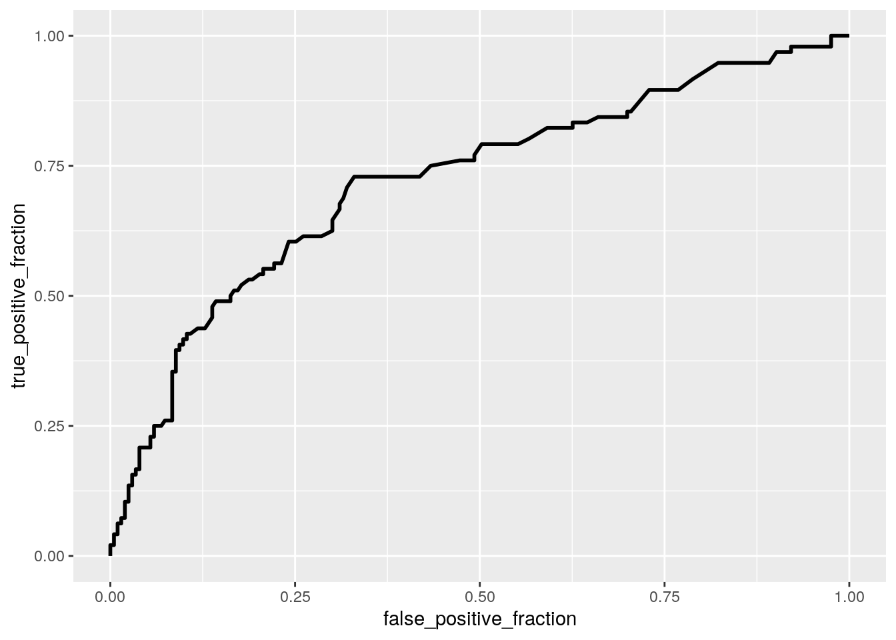
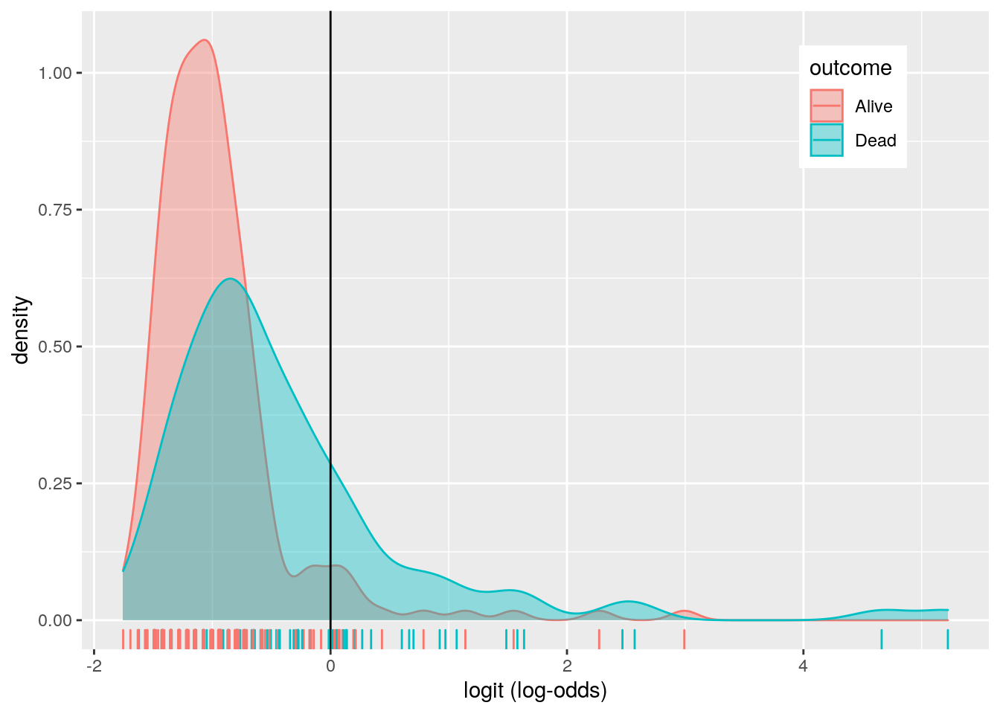

For my project, I chose the ‘Heart Failure Prediction’ dataset from kaggle.com (https://www.kaggle.com/andrewmvd/heart-failure-clinical-data). The dataset has 153 observations, 6 numeric variables and 5 binary categorical variables. It aims to predict probability of the death of a person from heart failure based on various factors.
Age: numeric variable indicating age of patient in years Anemia: categorical variable indicating if patient has anemia or not (1=Yes, 0=No) Creatinine Phosphate: numeric variable indicating level of creatitine phosphate levels in blood Diabetes: categorical variable indicating if patient has diabetes or not (1=Yes, 0=No) Ejection Fraction: numeric variable indicating percentage of blood leaving the heart at each contraction High Blood Pressure: categorical variable indicating if patient has high blood pressure or not (1=Yes,0=No) Platelets: numeric variable indicating no of platelets in the blood Creatinine Serum: numeric variable indicating level of serum creatinine in the blood Sodium Serum: numeric variable indicating level of serum sodium in the blood Sex: categorical variable indicating sex of patient (1=Female,0=Male) Smoking: categorical variable indicating whether the patient is a smoker or not (1=Yes, 0=No) Death: categorical variable indicating if patient died from heart failure or not (1=Yes,0=No). This will be our dependent/response variable.
man1 <- manova(cbind(ejection, platelets, phosphokinase, creatine,
sodium) ~ death, data = p2data)
summary(man1)## Df Pillai approx F num Df den Df Pr(>F)
## death 1 0.17047 12.042 5 293 1.284e-10 ***
## Residuals 297
## ---
## Signif. codes: 0 '***' 0.001 '**' 0.01 '*' 0.05 '.' 0.1 ' ' 1summary.aov(man1)## Response ejection :
## Df Sum Sq Mean Sq F value Pr(>F)
## death 1 3011 3011.4 23.094 2.453e-06 ***
## Residuals 297 38728 130.4
## ---
## Signif. codes: 0 '***' 0.001 '**' 0.01 '*' 0.05 '.' 0.1 ' ' 1
##
## Response platelets :
## Df Sum Sq Mean Sq F value Pr(>F)
## death 1 6.8831e+09 6883065405 0.7189 0.3972
## Residuals 297 2.8437e+12 9574701084
##
## Response phosphokinase :
## Df Sum Sq Mean Sq F value Pr(>F)
## death 1 1103933 1103933 1.1733 0.2796
## Residuals 297 279450722 940912
##
## Response creatine :
## Df Sum Sq Mean Sq F value Pr(>F)
## death 1 27.618 27.6185 28.159 2.19e-07 ***
## Residuals 297 291.304 0.9808
## ---
## Signif. codes: 0 '***' 0.001 '**' 0.01 '*' 0.05 '.' 0.1 ' ' 1
##
## Response sodium :
## Df Sum Sq Mean Sq F value Pr(>F)
## death 1 221.1 221.084 11.765 0.0006889 ***
## Residuals 297 5581.0 18.791
## ---
## Signif. codes: 0 '***' 0.001 '**' 0.01 '*' 0.05 '.' 0.1 ' ' 1pairwise.t.test(p2data$phosphokinase, p2data$death, p.adj = "none")##
## Pairwise comparisons using t tests with pooled SD
##
## data: p2data$phosphokinase and p2data$death
##
## 0
## 1 0.28
##
## P value adjustment method: nonepairwise.t.test(p2data$phosphokinase, p2data$death, p.adj = "bonferroni")##
## Pairwise comparisons using t tests with pooled SD
##
## data: p2data$phosphokinase and p2data$death
##
## 0
## 1 0.28
##
## P value adjustment method: bonferroniI chose to test if there was a significant difference between means of ejection fraction, mean levels of phosphokinase, mean number of platelets, means levels of creatine serum, and mean levels of sodium serum in a group of patients had anaemia and a group that did not. After the conducting the MANOVA, we can see that the anaemic status of patient does have a significant effect on atleast one of the group means (p-value=0.0193) Based on this, I conducted univariate ANOVA tests for each of the numeric variables. Only one ANOVA test came out as significant, the one between the level of creatine phosphokinase and the patient’s anaemic test. I ran a pairwise t-test and got a p=value of 0.00092, confirming a signficant difference between the means of the level of creatine phosphokinase in patients with anaemia and those without. In total, we ran 1 MANOVA, 5 ANOVAs, and 1 t-test. Hence, our corrected significance level is 0.007. Even with this correction, there is a significant difference between the means of the level of creatine phosphokinase in patients with anaemia and those without.
MANOVA tests have the following assumptions: Independent Observations Multivariate Normality Equal Variance Linear Relationship among DVs No extreme outliers
It is unlikely that any assumptions other than independent observations and no extreme outliers were fulfilled.
Null Hypothesis: The levels of creatine phosphokinase of a dead patient do not differ from the levels of creatine phosphkinase of an alive patient.
Alternative Hypothesis: The levels of creatine phosphokinase of a dead patient differ from the levels of creatine phosphkinase of an alive patient.
anovat <- aov(death ~ phosphokinase, data = p2data)
summary(aov(death ~ phosphokinase, data = p2data))## Df Sum Sq Mean Sq F value Pr(>F)
## phosphokinase 1 0.26 0.2565 1.173 0.28
## Residuals 297 64.92 0.2186F.stat <- (100/12)
numer.df <- 1
denom.df <- 297
x1 <- seq(F.stat, 10, len = 100)
x2 <- seq(qf(0.95, numer.df, denom.df), 10, len = 100)
y1 <- df(x1, numer.df, denom.df)
y2 <- df(x2, numer.df, denom.df)
{
curve(df(x, numer.df, denom.df), main = "", xlim = c(0, 10),
xlab = "F")
polygon(c(x2[1], x2, x2[100]), c(0, y2, 0), col = "black",
border = NA)
polygon(c(x1[1], x1, x1[100]), c(0, y1, 0), col = "grey",
border = NA)
abline(v = F.stat, lty = 2)
} I conducted an ANOVA to see whether creatine phosphokinase levels can help predict mortality from heart disease. With a p-value of 0.28, we can see that there is no significant difference between the creatine phosphokinase levels in patients that died of heart disease and creatine phosphokinase levels in patients that did not die of heart disease.
Null Hypothesis 1: When controlling for the effect of sodium levels, diabetes does not have a signficiant effect on creatine serum levels of a patient.
Null Hypothesis 2: When controlling for the effeect of diabetes, sodium levels do not have a significant effect on creatine serum levels of a patient.
linearfit <- lm(creatine ~ diabetes * sodium, data = p2data)
summary(linearfit)##
## Call:
## lm(formula = creatine ~ diabetes * sodium, data = p2data)
##
## Residuals:
## Min 1Q Median 3Q Max
## -1.5583 -0.4240 -0.2513 0.1191 7.5979
##
## Coefficients:
## Estimate Std. Error t value Pr(>|t|)
## (Intercept) 14.13142 2.79401 5.058 7.47e-07 ***
## diabetes -11.22108 3.66212 -3.064 0.00239 **
## sodium -0.09270 0.02039 -4.546 7.99e-06 ***
## diabetes:sodium 0.08114 0.02679 3.029 0.00267 **
## ---
## Signif. codes: 0 '***' 0.001 '**' 0.01 '*' 0.05 '.' 0.1 ' ' 1
##
## Residual standard error: 1.003 on 295 degrees of freedom
## Multiple R-squared: 0.06883, Adjusted R-squared: 0.05936
## F-statistic: 7.269 on 3 and 295 DF, p-value: 0.0001016ggplot(p2data, aes(x = creatine, y = sodium, group = diabetes)) +
geom_point(aes(color = diabetes)) + geom_smooth(method = "lm",
formula = y ~ 1, se = F, fullrange = T, aes(color = diabetes)) +
theme(legend.position = c(0.9, 0.19)) + xlab("")+theme_classic()
Linear Regression: Creatine Serum = 14.13 - 11.22(Diabetes) - 0.093(Sodium Serum) + 0.081(Diabetes*Sodium) Controlling for levels of sodium serum, a diabetic patient will have creatine levels 11.22 units below a patient without diabetes. Controlling for the presence of diabetes, a one unit increase in sodium serum will lead to a 0.093 unit decrease in creatine serum levels.
Hence, diabetes and sodium serum account for 5.94% of the variation in creatine serum levels.
p2data %>% ggplot(aes(x = creatine, y = sodium)) + geom_point() +
theme_classic()
resids <- lm(creatine ~ sodium, data = p2data)$residuals
ggplot() + geom_histogram(aes(resids), bins = 10) + theme_classic()
shapiro.test(resids)##
## Shapiro-Wilk normality test
##
## data: resids
## W = 0.55779, p-value < 2.2e-16##Homoskedasticity
fitted <- lm(creatine ~ sodium, data = p2data)$fitted.values
ggplot() + geom_point(aes(fitted, resids)) + theme_classic()
As we can see, none of the assumptions beside random sampling have been fulfilled by our regression data.
summary(linearfit)$coef## Estimate Std. Error t value Pr(>|t|)
## (Intercept) 14.13141993 2.79400918 5.057757 7.466760e-07
## diabetes -11.22107606 3.66211703 -3.064095 2.385028e-03
## sodium -0.09270182 0.02039266 -4.545843 7.993604e-06
## diabetes:sodium 0.08114407 0.02679052 3.028835 2.672126e-03coeftest(linearfit, vcov = vcovHC(linearfit))##
## t test of coefficients:
##
## Estimate Std. Error t value Pr(>|t|)
## (Intercept) 14.131420 3.183558 4.4389 1.279e-05 ***
## diabetes -11.221076 4.377850 -2.5631 0.01087 *
## sodium -0.092702 0.022863 -4.0546 6.431e-05 ***
## diabetes:sodium 0.081144 0.031895 2.5441 0.01146 *
## ---
## Signif. codes: 0 '***' 0.001 '**' 0.01 '*' 0.05 '.' 0.1 ' ' 1The robust standard errors correct for the absense of heteroskedasticity. However, all the variables remain significant, similar to the results of our original regression test.
boot_dat <- sample_frac(p2data, replace = T)
samp_distn <- replicate(5000, {
boot_dat <- sample_frac(p2data, replace = T)
bootstrapfit <- lm(creatine ~ sodium * diabetes, data = boot_dat)
coef(bootstrapfit)
})
samp_distn %>% t %>% as.data.frame %>% summarize_all(sd)## (Intercept) sodium diabetes sodium:diabetes
## 1 3.127608 0.02245989 4.316275 0.03143794The bootstrapped standards errors are very similar to both our corrected and uncorrected standard errors.
logisticfit <- glm(death ~ creatine + sodium, data = p2data,
family = binomial)
summary(logisticfit)##
## Call:
## glm(formula = death ~ creatine + sodium, family = binomial, data = p2data)
##
## Deviance Residuals:
## Min 1Q Median 3Q Max
## -2.4664 -0.8104 -0.6997 1.1549 1.8981
##
## Coefficients:
## Estimate Std. Error z value Pr(>|z|)
## (Intercept) 7.57448 4.29773 1.762 0.077996 .
## creatine 0.71696 0.19316 3.712 0.000206 ***
## sodium -0.06836 0.03109 -2.199 0.027881 *
## ---
## Signif. codes: 0 '***' 0.001 '**' 0.01 '*' 0.05 '.' 0.1 ' ' 1
##
## (Dispersion parameter for binomial family taken to be 1)
##
## Null deviance: 375.35 on 298 degrees of freedom
## Residual deviance: 342.20 on 296 degrees of freedom
## AIC: 348.2
##
## Number of Fisher Scoring iterations: 4exp(coef(logisticfit))## (Intercept) creatine sodium
## 1947.8422982 2.0482044 0.9339232p2data$probs <- predict(logisticfit, type = "response")
confmat <- (table(predict = as.numeric(p2data$probs > 0.5), truth = p2data$death) %>%
addmargins)
confmat %>% kbl(caption = "Confusion Matrix") %>% kable_classic(full_width = T,
html_font = "Cambria")| 0 | 1 | Sum | |
|---|---|---|---|
| 0 | 191 | 73 | 264 |
| 1 | 12 | 23 | 35 |
| Sum | 203 | 96 | 299 |
stats <- class_diag(p2data$probs, p2data$death) %>% kbl() %>%
kable_classic()
stats| acc | sens | spec | ppv | auc |
|---|---|---|---|---|
| 0.7157191 | 0.2395833 | 0.9408867 | 0.6571429 | 0.7203664 |
ROCplot <- ggplot(p2data) + geom_roc(aes(d = death, m = probs),
n.cuts = 0)
ROCplot
calc_auc(ROCplot)## PANEL group AUC
## 1 1 -1 0.7203664p2data <- p2data %>% mutate(outcome = ifelse(death == "1", "Dead",
"Alive"))The odds of death from heart disease increase by 2.05 times for every one unit increase in creatine serum. The odds of death from heart disease increase by 0.93 times for every one unit increase in sodium serum. The effects of both creatine serum (p-value=0.0002) and sodium serum (p-value=0.028) are significant in predicting the odds of a patient dying from heart disease.
The specificity of the model (proportion of number of alive patients classified correctly by the model) is 0.941 The sensitivity of the model (proportion of number of dead patients classified correct by the model) is 0.239 The precision of the model (number of dead patients classified by the model compared to the actual number of dead patients) is 0.716 The AUC is 0.72 which is about average and indicates how likely the model is to able to differentiate between the two outcomes.
Hence, the model is good at predicting positive outcomes but not at predicting negative outcomes.
p2data$logit <- predict(logisticfit, type = "link")
p2data %>% ggplot() + geom_density(aes(logit, color = outcome,
fill = outcome), alpha = 0.4) + theme(legend.position = c(0.85,
0.85)) + geom_vline(xintercept = 0) + xlab("logit (log-odds)") +
geom_rug(aes(logit, color = outcome))
p2data2 <- p2data %>% select(-"probs", -"logit", -"outcome")
logisticfit2 <- glm(death ~ ., data = p2data2, family = "binomial")
summary(logisticfit2)##
## Call:
## glm(formula = death ~ ., family = "binomial", data = p2data2)
##
## Deviance Residuals:
## Min 1Q Median 3Q Max
## -2.1848 -0.5706 -0.2401 0.4466 2.6668
##
## Coefficients:
## Estimate Std. Error z value Pr(>|z|)
## (Intercept) 1.018e+01 5.657e+00 1.801 0.071774 .
## age 4.742e-02 1.580e-02 3.001 0.002690 **
## anaemia -7.470e-03 3.605e-01 -0.021 0.983467
## phosphokinase 2.222e-04 1.779e-04 1.249 0.211684
## diabetes 1.451e-01 3.512e-01 0.413 0.679380
## ejection -7.666e-02 1.633e-02 -4.695 2.67e-06 ***
## bp -1.027e-01 3.587e-01 -0.286 0.774688
## platelets -1.200e-06 1.889e-06 -0.635 0.525404
## creatine 6.661e-01 1.815e-01 3.670 0.000242 ***
## sodium -6.698e-02 3.974e-02 -1.686 0.091855 .
## sex -5.337e-01 4.139e-01 -1.289 0.197299
## smoking -1.349e-02 4.126e-01 -0.033 0.973915
## time -2.104e-02 3.014e-03 -6.981 2.92e-12 ***
## ---
## Signif. codes: 0 '***' 0.001 '**' 0.01 '*' 0.05 '.' 0.1 ' ' 1
##
## (Dispersion parameter for binomial family taken to be 1)
##
## Null deviance: 375.35 on 298 degrees of freedom
## Residual deviance: 219.55 on 286 degrees of freedom
## AIC: 245.55
##
## Number of Fisher Scoring iterations: 6logprobs2 <- predict(logisticfit2, type = "link")
class_diag(logprobs2, p2data2$death)## acc sens spec ppv auc
## 1 0.8294314 0.6041667 0.9359606 0.8169014 0.8972188exp(coef(logisticfit2))## (Intercept) age anaemia phosphokinase diabetes
## 2.650077e+04 1.048561e+00 9.925574e-01 1.000222e+00 1.156213e+00
## ejection bp platelets creatine sodium
## 9.262024e-01 9.024162e-01 9.999988e-01 1.946618e+00 9.352129e-01
## sex smoking time
## 5.864558e-01 9.865984e-01 9.791753e-01When testing for the effects of all the variables on probability of the death of the patient from heart disease, age, phosphokinase levels, ejection levels, and creatine serum levels have a significant effect. The odds of a patient dying from heart disease increase by 1.05 times with a one unit increase in age. The odds of a patient dying from heart disease increase by 1.00 times with a one unit increase in phosphokinase levels. The odds of a patient dying from heart disease increase by 0.93 times with a one unit increase in ejection levels. The odds of a patient dying from heart disease increase by 1.93 times with a one unit icnrease in creatine serum levels.
The sensitivity of the model has increased from 0.239 in our previous model to 0.344. The specificity has increased slightly from 0.934 to 0.956. The precision also increased to 0.756. AUC increased to 0.809.
k = 10
data1 <- p2data2[sample(nrow(p2data2)), ]
folds <- cut(seq(1:nrow(p2data2)), breaks = k, labels = F)
diags <- NULL
for (i in 1:k) {
train <- data1[folds != i, ]
test <- data1[folds == i, ]
truth <- test$death
fit <- glm(death ~ ., data = train, family = "binomial")
probs <- predict(fit, newdata = test, type = "response")
diags <- rbind(diags, class_diag(probs, truth))
}
summarize_all(diags, mean)## acc sens spec ppv auc
## 1 0.8229885 0.6790276 0.8946518 0.7477525 0.8621304The sensitivity of our model goes up significantly whereas specificity decreases. This is to be expected since both values have a trade off. AUC does not increase greatly, nor does accuracy. Precision actually goes down.
y <- as.matrix(p2data2$death)
x <- model.matrix(logisticfit2)
head(x)## (Intercept) age anaemia phosphokinase diabetes ejection bp platelets creatine
## 1 1 75 0 582 0 20 1 265000 1.9
## 2 1 55 0 7861 0 38 0 263358 1.1
## 3 1 65 0 146 0 20 0 162000 1.3
## 4 1 50 1 111 0 20 0 210000 1.9
## 5 1 65 1 160 1 20 0 327000 2.7
## 6 1 90 1 47 0 40 1 204000 2.1
## sodium sex smoking time
## 1 130 1 0 4
## 2 136 1 0 6
## 3 129 1 1 7
## 4 137 1 0 7
## 5 116 0 0 8
## 6 132 1 1 8cv <- cv.glmnet(x, y, family = "binomial")
lasso <- glmnet(x, y, family = "binomial", lambda = cv$lambda.1se)
coef(lasso)## 14 x 1 sparse Matrix of class "dgCMatrix"
## s0
## (Intercept) 0.838487738
## (Intercept) .
## age 0.009071624
## anaemia .
## phosphokinase .
## diabetes .
## ejection -0.028026066
## bp .
## platelets .
## creatine 0.264411121
## sodium .
## sex .
## smoking .
## time -0.012568974When performing LASSO, only three predictor variables are retained - age, ejectin levels, and creatine serum levels.
k = 10
data1 <- p2data2[sample(nrow(p2data2)), ]
folds <- cut(seq(1:nrow(p2data2)), breaks = k, labels = F)
diags <- NULL
for (i in 1:k) {
train <- data1[folds != i, ]
test <- data1[folds == i, ]
truth <- test$death
fit2 <- glm(death ~ age + ejection + creatine, data = train,
family = "binomial")
probs4 <- predict(fit2, newdata = test, type = "response")
diags <- rbind(diags, class_diag(probs4, truth))
}
summarize_all(diags, mean)## acc sens spec ppv auc
## 1 0.7557471 0.4637002 0.8943655 0.6612302 0.7765456After performing a regression only with the variables retained by LASSO, the AUC increases from 0.77 to 0.78, not really impactful.